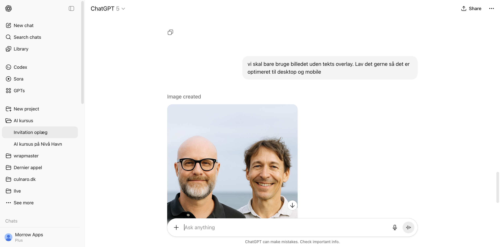
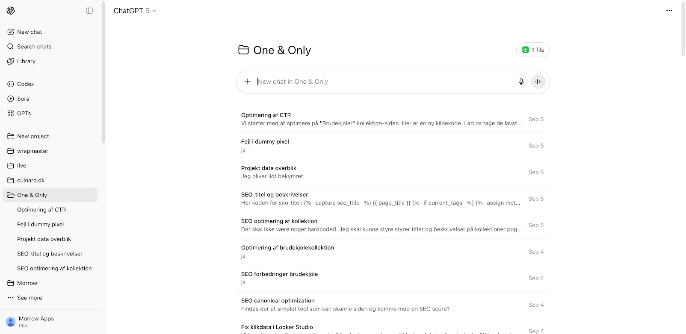

| 09.00 | Kaffe og croissant |
| 09.15 | AI - fordele og faldgruber |
| 09.45 | Gruppearbejde |
| 10.15 | Plenum |
| 10.30 | Prompts og øvelser |
| 10.45 | Plenum |
| 11.00 | Projekter og øvelser |
| 11.45 | Opsamling |
Bliv en selvsikker og kritisk bruger af AI.
En Large Language Model (LLM) er hjernen bag de AI’er, vi skal bruge i dag.
Tænk på den som en avanceret “auto-complete”.
En AI “hallucinerer”, når den finder på fakta, kilder eller oplysninger, som lyder overbevisende, men er forkerte.
Huskeregel: Stol aldrig blindt på en AI. Verificer altid vigtige oplysninger.
Din opgave som bruger: Vær kritisk. Spørg dig selv: “Kan dette være farvet af data? Er denne information troværdig? Kan jeg stå på mål for det?”
To og to ved bordene
Har I oplevet hallucinationer og forkerte svar fra AI?
Hvem har ansvaret for tekst som en LLM spytter ud?
Bruger I allerede AI og har det fungeret for jer?
Kvaliteten af dit output afhænger direkte af kvaliteten af dit input. En “prompt” er din kommando til AI’en.
| Dårlig Prompt (Uklar) | God Prompt (Målrettet) |
|---|---|
| “Skriv noget om elbiler.” | “Skriv en kort, objektiv tekst på 150 ord om fordele og ulemper ved at eje en elbil i Danmark i 2025. Målgruppen er boligejere.” |
| “Hvordan laver jeg en projektplan?” | “Agér som en erfaren projektleder. Lav en trin-for-trin guide til en projektplan for lancering af en ny hjemmeside.” |
Rolle, Opgave, Kontekst, Format
Dit første svar er sjældent det endelige. Den virkelige magi opstår i dialogen.
Huskeregel: Se AI’en som en assistent, du instruerer og guider.
Åbn din computer, tablet eller telefon eller del med din sidemakker
Afprøv prompts: Giv AI et uklart prompt og omskriv det til et mere målrettet i en ny chat. Hvad fortæller resultaterne dig?
4 grundpiller i prompting: Prøv at skabe et prompt som både indeholder en rolle, en opgave, noget kontekst og et format.
Brug forfinings-teknikken: Start bredt og bliv mere specifik i samme chat. Kan du guide AI på rette vej?


Brug din tablet eller laptop eller del med sidemakker. Vi skal ind på ChatGPT.
Tænk over to projekter: Tænk over to projekter som du gerne vil have hjælp til fra kunstig intelligens. Hvorfor er det en fordel at holde dem adskilte?
Opret projekter: Brug ChatGPT gratis og opret to projekter.
Start en chat: Begynd en samtale med ChatGPT hvor du forklarer den om det projekt du har valgt at starte med.
Alt du deler om en online AI, kan potentielt blive set af uvedkommende.
| Dette kan du trygt dele | Dette bør du ALDRIG dele |
|---|---|
| Generelle spørgsmål og research | Personnumre (CPR), passwords, kreditkortoplysninger |
| Anonymiserede data (f.eks. “En kunde har et problem med…”) | Fortrolige forretningsstrategier eller kundedata |
| Kreativ skrivning og brainstorming | Personlige helbredsoplysninger eller private samtaler |
Tommelfingerregel: Hvis du ikke ville skrive det på et åbent postkort, skal du ikke indtaste det i en offentlig AI.
Hvad AI er fantastisk til i dag:
Hvor AI stadig har begrænsninger:
Den ideelle start for teams, der vil forstå AI og identificere, hvor det kan skabe reel værdi i netop jeres virksomhed.
Intensivt AI-træningsforløb for jeres team kombineret med strategisk workshop. Vi går fra basal viden til en prioriteret liste over de mest værdifulde AI-projekter for jer. I får både et kompetenceløft og et klart, handlingsorienteret startskud på jeres AI-rejse.
Pris: 55.000 kr. ekskl. moms
Gå fra strategisk brainstorming til en håndgribelig demonstration af AI’s potentiale med jeres egne data og processer.
Vi tager det bedste fra Startpakken – træning og workshop – og omsætter jeres bedste idé til en fungerende prototype (Proof of Concept). Pakken giver jer en håndgribelig demonstration af AI’s værdi, hvilket fjerner usikkerhed og sikrer intern opbakning, før I investerer fuldt ud.
Pris: 175.000 kr. ekskl. moms
Få et komplet strategisk fundament og en klar køreplan for jeres AI-rejse, udviklet i tæt samarbejde med jeres ledelse.
Målrettet ledelsen. Vi analyserer jeres virksomheds AI-parathed og faciliterer derefter en strategisk workshop for at udvikle jeres vision og en konkret køreplan. Leverancen er et færdigt strategidokument, der sikrer jeres AI-investeringer er fuldt afstemt med virksomhedens overordnede mål.
Pris: 80.000 kr. ekskl. moms
Vi bygger og implementerer en specialiseret AI-løsning, der udnytter jeres interne viden og automatiserer jeres unikke processer.
Klar til at eksekvere? Vi designer, bygger og implementerer en fuldskala, skræddersyet AI-løsning, f.eks. et intelligent søgesystem (RAG) til jeres interne viden. Vi håndterer hele processen for at levere et system, der skaber målbar effektivitet og værdi i jeres daglige drift.
Pris: Fra 250.000 kr. ekskl. moms
Sikr jer vedvarende adgang til ekspertviden og få en fast partner, der hjælper jer med at navigere, vedligeholde og videreudvikle jeres AI-initiativer.
Garanteret løbende adgang til en fast AI-partner. Med denne retainer-pakke får I et aftalt antal timer hver måned til sparring, support og strategisk rådgivning. Vi hjælper jer med at fastholde momentum og sikrer, at jeres AI-løsninger kontinuerligt optimeres og skaber værdi.
Pris: Fra 8.000 kr. pr. måned ekskl. moms
Med en llms.txt fil og dit vigtigste indhold som markdown-filer forbliver du relevant når ChatGPT og Gemini bliver folk nye søgemaskiner
Vi analyserer din hjemmeside og webshop og sørger for en kurateret llms.txt fil og dit essentielle indhold i markdown format så det er tilgængeligt for llm-baserede og semantiske søgninger.
Pris: Fra 8.000 kr. pr. måned ekskl. moms